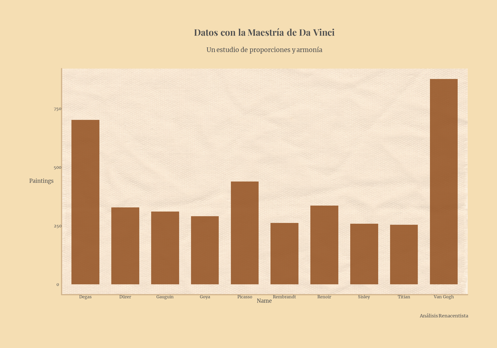
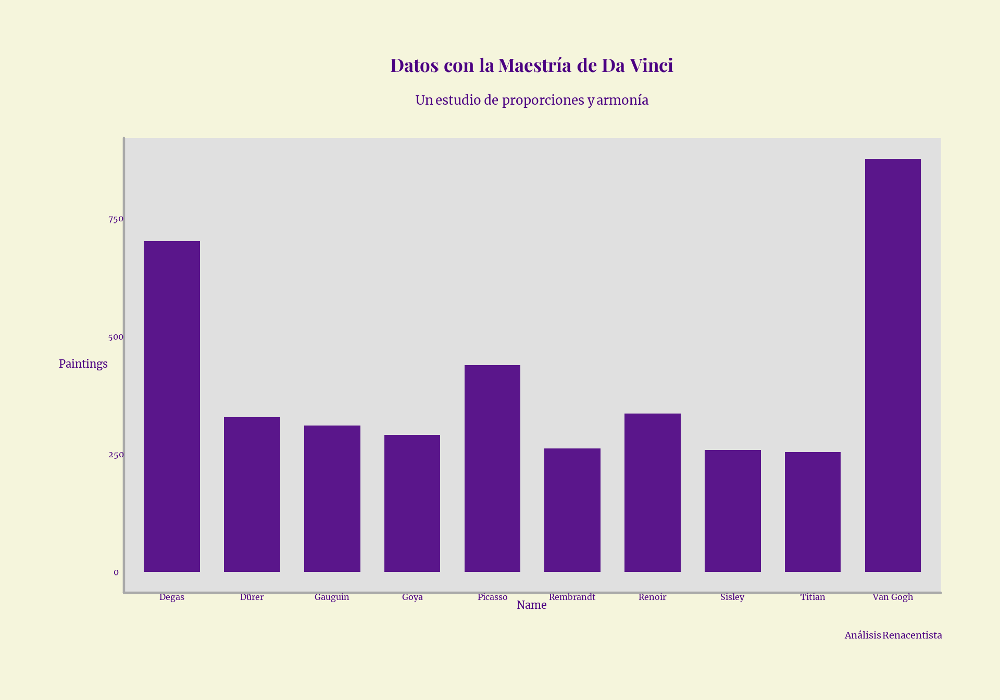
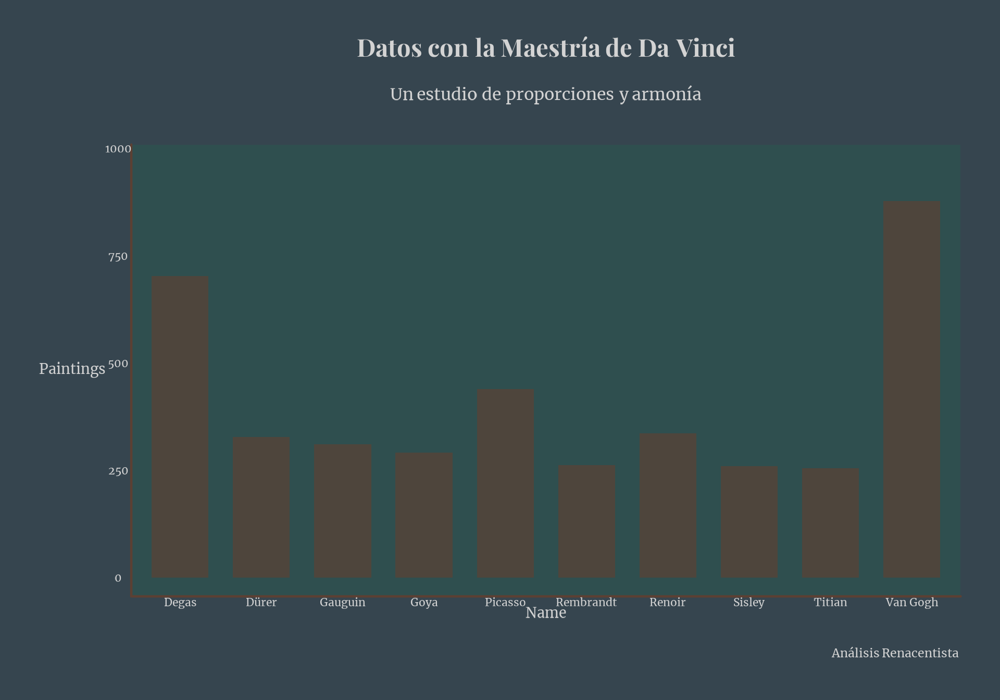
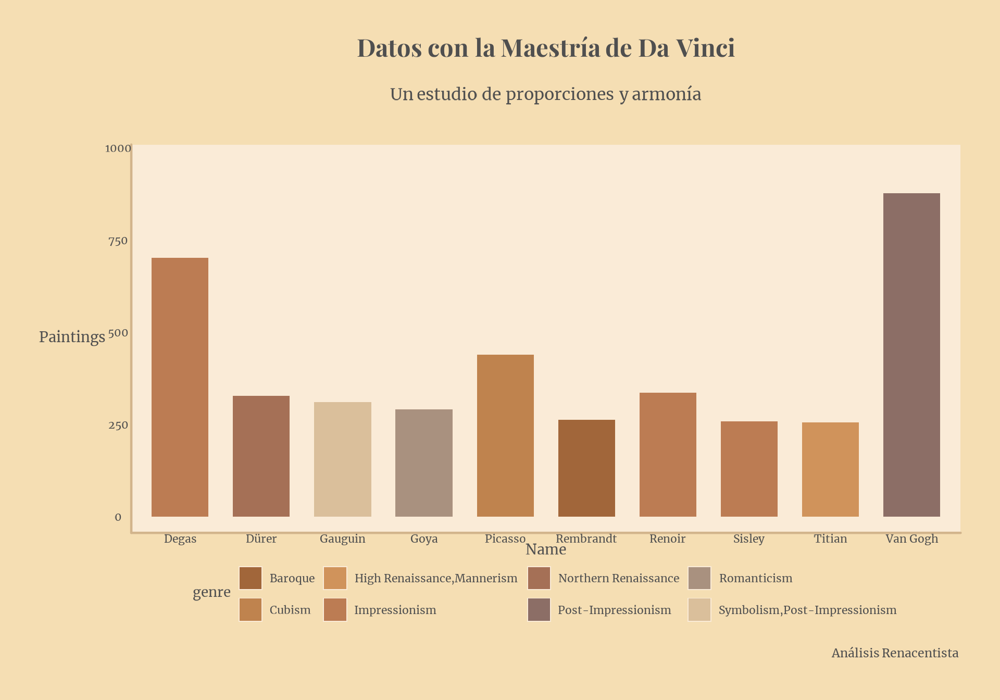
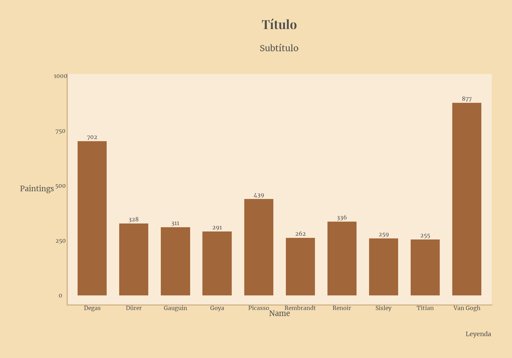
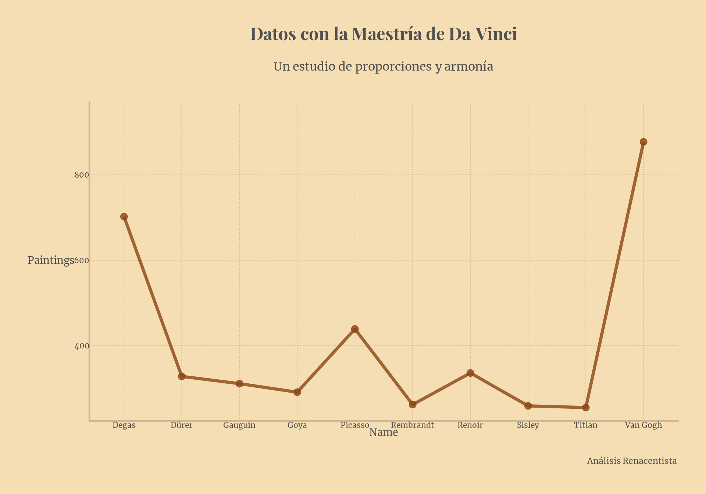
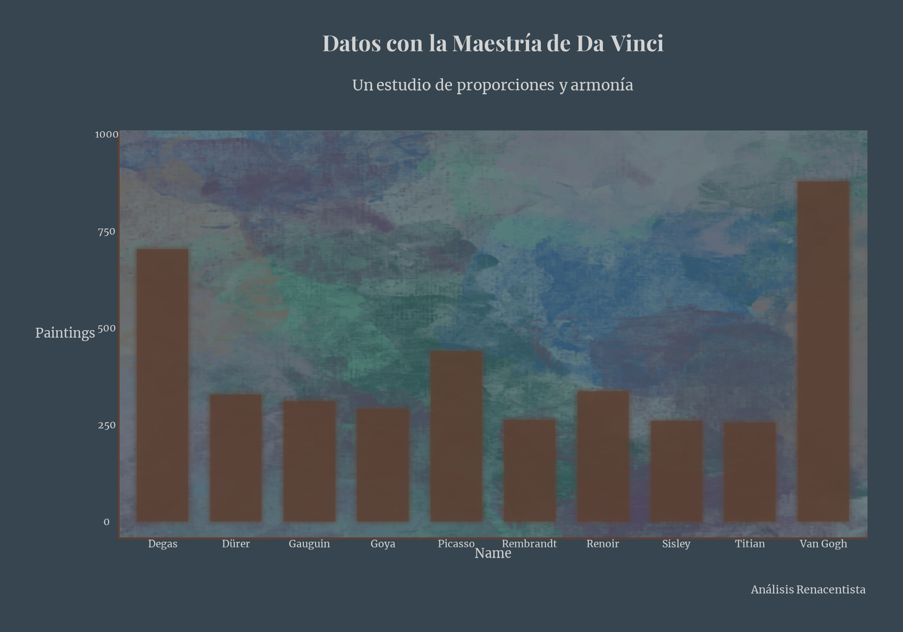

Uso de styles
use_styles.Rmd
data <- structure(list(name = c("Van Gogh", "Degas", "Picasso",
" Renoir", "Dürer", "Gauguin", "Goya",
"Rembrandt", "Sisley", "Titian"), genre = c("Post-Impressionism",
"Impressionism", "Cubism", "Impressionism", "Northern Renaissance",
"Symbolism,Post-Impressionism", "Romanticism", "Baroque", "Impressionism",
"High Renaissance,Mannerism"), paintings = c(877L, 702L, 439L,
336L, 328L, 311L, 291L, 262L, 259L, 255L)), class = "data.frame", row.names = c(NA,
-10L))
load_all_fonts() #Esto puede demorar unos segundos
#> Todas las fuentes de los estilos de artistas han sido cargadas.Funciones de artistas
Las funciones están pensadas para ofrecer una visualización rápida que no requiera escribir muchas líneas de código. Esto puede traer problemas como superposición de elementos o tamaños inadecuados en determinados gráficos. Tener en cuenta que se pueden pisar algunas configuraciones agregando capas a continuación de la función como si fuera un ggplot común (ver ejemplo más abajo en show_labels).
Cada función de style_() posee parámetros para
personalizar aún más el estilo del gráfico. Como mínimo debemos
indicarle las variables de X e Y (excepto mapas). Tomemos como ejemplo
la función de Da Vinci en versión columnas:
style_da_vinci(data, name, paintings, plot_type = "column", canvas = 2)
work_inspired_by
Podemos seleccionar alguna variante inspirada en sus obras. En el
caso de Da Vinci, las opciones de work_inspired_by son:
mona_lisa, last_supper y
vitruvian_man
style_da_vinci(data, name, paintings, plot_type = "column", work_inspired_by = "mona_lisa")
style_da_vinci(data, name, paintings, plot_type = "column", work_inspired_by = "last_supper")
style_da_vinci(data, name, paintings, plot_type = "column", work_inspired_by = "vitruvian_man")
fill_var o color_var
Podemos utilizar alguna variable de mapeo para jugar con los colores de la paleta y diferenciar categorías:
style_da_vinci(data, name, paintings, plot_type = "column", fill_var = genre)
show_labels
Agregar etiquetas sobre el eje Y (y expando eje Y):
style_da_vinci(data, name, paintings, plot_type = "column", show_labels = T) +
ggplot2::scale_y_continuous(limits = c(0, 1000))
Incluso cambiar la orientación ajustando el parámetro coord_flip
style_da_vinci(data, name, paintings, plot_type = "column", show_labels = T, coord_flip = T) +
ggplot2::coord_flip() +
ggplot2::scale_y_continuous(limits = c(0, 1000))
#> Coordinate system already present. Adding new coordinate system, which will
#> replace the existing one.
labs
style_da_vinci(data, name, paintings, plot_type = "column", title = "Título", subtitle = "Subtítulo", caption = "Leyenda")Otros
Para aquellos artistas valientes que quieran retocar aún más el
gráfico y desafiar los límites del arte, se pueden ajustar otros
parámetros como add_glow, canvas y
add_texture.
add_grid_linesincorpora las líneas de la grilla del gráfico.show_backgroundagrega color al panel del gráfico para mayor contraste.add_texturees aún muy experimental, no funciona con el fill_var y puede demorar unos segundos en cargar. Aplica un filtro estilo pintura al gráfico entero, generando márgenes indeseados. También le agrega textura a los gráficos de columnas. Se sugiere aumentar eltext_sizepara mejorar la visual de los textos.canvasofrece la posibilidad de agregar un fondo estilo lienzo al panel del gráfico, lo cual no es compatible con el uso deadd_grid_linesoshow_background, y se puede optar por distintos lienzos (del 1 al 6).add_glowagrega brillo a las geom principales.
style_da_vinci(data, name, paintings, plot_type = "column",
work_inspired_by = "last_supper",
canvas = 6,
add_glow = T)
style_da_vinci(data, name, paintings, plot_type = "column",
work_inspired_by = "mona_lisa",
canvas = 5,
add_texture = T,
text_size = 32)